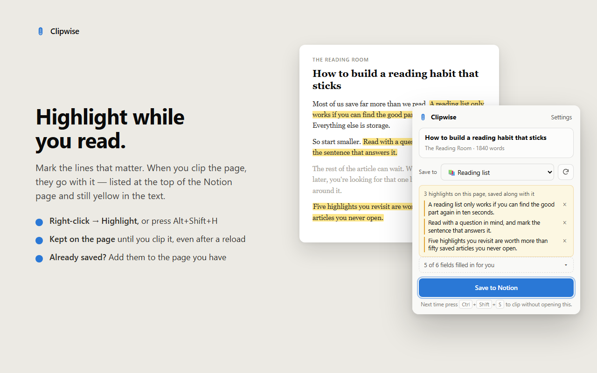

You read an article, three sentences matter, and a week later you can't find them. The fix is to highlight while you read and have those highlights land in Notion with the page. Here are three ways to do that, from free to paid.
best for: saving the article and your highlights into a Notion database in one go
In Notion, the page starts with a Highlights heading and each highlight as a quote, followed by the full article, where the same sentences are still yellow. If your database has a text property with "Highlights" in its name, Clipwise fills that too, so you can see them in your table view.

Already saved the page earlier? Highlight more, open Clipwise, and add the new highlights to the page you have instead of saving it twice.
best for: the odd highlight, no extension at all
/quote and paste it in.It works, but it's slow, and after a few articles most people stop doing it. You also lose the article itself unless you save it separately.
best for: heavy readers who want a separate reading app
Apps like Readwise Reader are built around highlighting and can send your highlights to Notion. They're excellent, but they're paid subscriptions, and Notion becomes a place your highlights are copied to rather than where you save and read. If your reading already happens in Notion, that's an extra app in between.
No. The official clipper saves the page, but it has no highlighting. You need a different extension or a read-later app for that.
With Clipwise: select text, right-click and choose Highlight with Clipwise (or press Alt+Shift+H), then save the page. The highlights go to the top of the Notion page as quotes. It is free and needs no account.
Not with Clipwise. Highlights are stored on your own computer until you save the page, and they come back when you open the page and click the Clipwise icon.
Yes. Clipwise recognises pages that are already in your database. Highlight more on the article, open Clipwise, and add the new highlights to the existing Notion page.